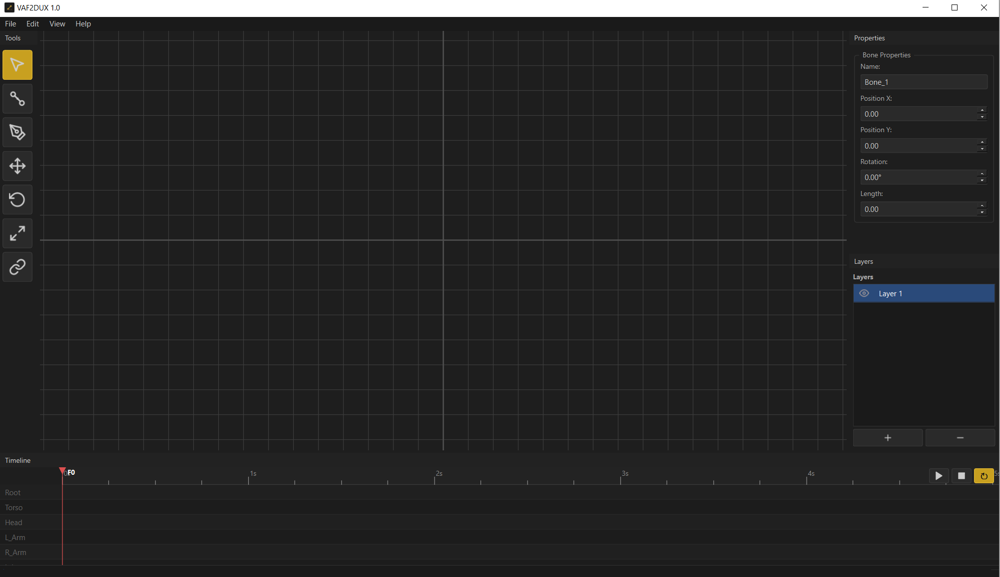
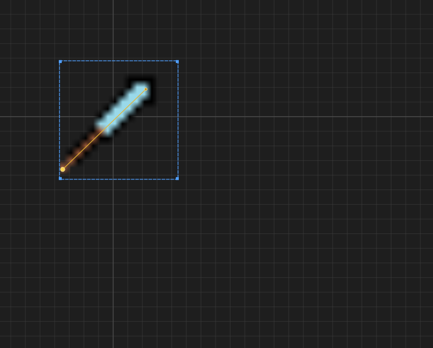

Free & Open Source
2D Animation,
Simplified.
A free, fast 2D animation tool with bone rigging, keyframe animation, and real-time playback. Built in C++ with Qt6.

A free, fast 2D animation tool with bone rigging, keyframe animation, and real-time playback. Built in C++ with Qt6.
Create skeletal rigs with parent-child bone hierarchies. Bones auto-snap when placed near each other.
Set keyframes for position, rotation, and scale with smooth interpolation between frames.
Preview your animations at 24fps with play, pause, stop, and loop controls.
Separate Move, Rotate, and Scale gizmos just like 3ds Max and Blender. Precise control over every transform.
Organize your sprites and elements with a layer panel. Add, delete, rename, and toggle visibility.
Export as MP4 video, PNG sequence, or GIF. Ready for your game, social media, or portfolio.
See previous and next frames as faded overlays. Blue for past, red for future. Toggle with one click.
Save your work as .vaf project files. Pick up right where you left off.
Import PNG, JPG, WebP, SVG, and more. Bind sprites to bones for character animation.



Free forever. No account required. No strings attached.